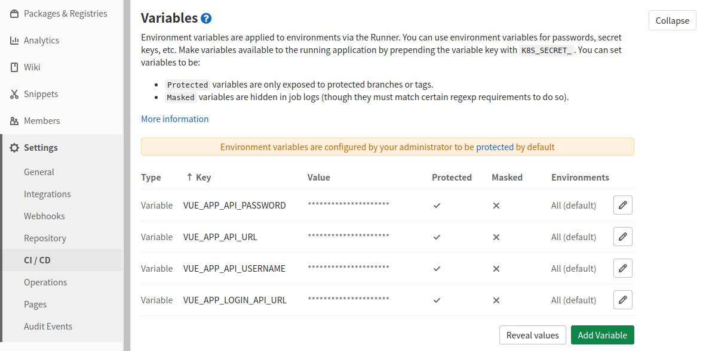
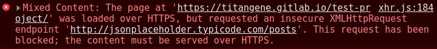

<!DOCTYPE html><html><head><meta charset="utf-8"><title>GitLab Page 自動部署 Vue CLI 專案 | Titangene Blog</title><meta http-equiv="X-UA-Compatible" content="IE=edge"><meta name="viewport" content="width=device-width,initial-scale=1,maximum-scale=1"><meta name="HandheldFriendly" content="True"><meta name="apple-mobile-web-app-capable" content="yes"><meta name="author" content="Titangene"><link rel="shortcut icon" href="/favicon.ico"><link rel="alternate" href="/atom.xml" title="Titangene Blog"><meta name="description" content="手動將 Vue CLI build 出來，然後再 push 至遠端部署，這些步驟雖然很簡單，但這樣不是很有效率，所以應透過自動部署來處理。本篇介紹如何透過 GitLab CI&#x2F;CD 來將 Vue CLI 專案自動部署至 GitLab Page。"><meta property="og:type" content="article"><meta property="og:title" content="GitLab Page 自動部署 Vue CLI 專案"><meta property="og:url" content="https://titangene.github.io/article/vue-cli-gitlab-page-ci.html"><meta property="og:site_name" content="Titangene Blog"><meta property="og:description" content="手動將 Vue CLI build 出來，然後再 push 至遠端部署，這些步驟雖然很簡單，但這樣不是很有效率，所以應透過自動部署來處理。本篇介紹如何透過 GitLab CI&#x2F;CD 來將 Vue CLI 專案自動部署至 GitLab Page。"><meta property="og:locale" content="zh_TW"><meta property="og:image" content="https://titangene.github.io/images/cover/vue.jpg"><meta property="article:published_time" content="2020-09-13T15:58:28.000Z"><meta property="article:modified_time" content="2020-09-13T16:26:01.574Z"><meta property="article:author" content="Titangene"><meta property="article:tag" content="Vue.js"><meta property="article:tag" content="w3HexSchool"><meta property="article:tag" content="GitLab"><meta property="article:tag" content="CI&#x2F;CD"><meta property="article:tag" content="GitLab Page"><meta name="twitter:card" content="summary_large_image"><meta name="twitter:image" content="https://titangene.github.io/images/cover/vue.jpg"><meta name="twitter:creator" content="@titangeneTW"><meta name="twitter:site" content="@titangene_blog"><meta property="fb:admins" content="100001106016019"><meta property="fb:app_id" content="2470546159839111"><meta property="og:image:width" content="1200"><meta property="og:image:height" content="630"><meta name="google-site-verification" content="AaJ39L7h-nWwJjXJMhAMtXSF6H6BUgGWXC80kYvLic8"><link href="https://fonts.googleapis.com/css2?family=Roboto&display=swap" rel="stylesheet"><link href="https://fonts.googleapis.com/css?family=Source+Code+Pro&display=swap" rel="stylesheet"><link rel="stylesheet" href="https://cdnjs.cloudflare.com/ajax/libs/font-awesome/5.13.0/css/all.min.css"><link rel="stylesheet" href="https://unpkg.com/gitalk/dist/gitalk.css"><link rel="stylesheet" href="/style.css"><script async src="https://www.googletagmanager.com/gtag/js?id=G-KX04S5LSX1"></script><script>!function(a){function n(){dataLayer.push(arguments)}a.dataLayer=a.dataLayer||[],n("js",new Date),n("config","G-KX04S5LSX1")}(window)</script><script>function setLoadingBarProgress(e){document.getElementById("loading-bar").style.width=e+"%"}</script><meta name="generator" content="Hexo 4.2.0"><link rel="alternate" href="/atom.xml" title="Titangene Blog" type="application/atom+xml"></head></html><body><div id="loading-bar-wrapper"><div id="loading-bar"></div></div><script>setLoadingBarProgress(20)</script><header class="l_header"><div class="wrapper"><div class="nav-main container container--flex"><a class="logo flat-box" href="/">Titangene Blog</a><div class="menu"><ul class="h-list"><li><a class="flat-box nav-home" href="/">Home</a></li><li><a class="flat-box nav-archives" href="/archives">Archives</a></li></ul><div class="underline"></div></div><div class="m_search"><form name="searchform" class="form u-search-form"><input type="text" class="input u-search-input" placeholder="Search"> <i class="fas fa-search"></i></form></div><ul class="switcher h-list"><li class="s-search"><a class="fas fa-search" href="javascript:void(0)"></a></li><li class="s-menu"><a class="fas fa-bars" href="javascript:void(0)"></a></li></ul></div><div class="nav-sub container container--flex"><a class="logo flat-box" href="/">Titangene Blog</a><ul class="switcher h-list"><li class="s-comment"><a class="far fa-comment-alt" href="javascript:void(0)"></a></li><li class="s-top"><a class="fas fa-arrow-up" href="javascript:void(0)"></a></li><li class="s-toc"><a class="fas fa-list-ol" href="javascript:void(0)"></a></li></ul></div></div></header><aside class="menu-phone"><nav><a href="/" class="nav-home nav">Home </a><a href="/archives" class="nav-archives nav">Archives</a></nav></aside><script>setLoadingBarProgress(40)</script><div class="l_body"><div class="container clearfix"><div class="l_main"><article id="post-vue-cli-gitlab-page-ci" class="post white-box article-type-post" itemscope itemprop="blogPost"><section class="meta"><h2 class="title"><a href="/article/vue-cli-gitlab-page-ci.html">GitLab Page 自動部署 Vue CLI 專案</a></h2><span class="post-time"><span class="post-meta-item-icon"><i class="fa fa-calendar"></i> </span><span class="post-meta-item-text">發表於</span> <time title="建立時間：2020-09-13 23:58:28" itemprop="dateCreated datePublished" datetime="2020-09-13T23:58:28+08:00">2020-09-13 </time><span class="post-meta-divider">|</span> <span class="post-meta-item-icon"><i class="fa fa-calendar-check"></i> </span><span class="post-meta-item-text">更新於</span> <time title="修改時間：2020-09-14 00:26:01" itemprop="dateModified" datetime="2020-09-14T00:26:01+08:00">2020-09-14</time></span> <span class="comments-count"><span class="post-meta-divider">|</span> <span class="post-meta-item-icon"><i class="fas fa-comment"></i> </span><a href="https://titangene.github.io/article/vue-cli-gitlab-page-ci.html#comments" class="article-comment-count">留言</a></span><div class="post-category"><span class="post-meta-item-icon"><i class="fa fa-folder"></i> </span><span class="post-meta-item-text">分類於</span> <span itemprop="about" itemscope itemtype="http://schema.org/Thing"><a href="/categories/web-dev/" itemprop="url" rel="index"><span itemprop="name">web-dev</span></a></span></div></section><section class="toc-wrapper"><h3>目錄</h3><ol class="toc"><li class="toc-item toc-level-1"><a class="toc-link" href="#CI-CD-自動部署設定"><span class="toc-text">CI&#x2F;CD 自動部署設定</span></a></li><li class="toc-item toc-level-1"><a class="toc-link" href="#設定-GitLab-CI-CD-環境變數"><span class="toc-text">設定 GitLab CI&#x2F;CD 環境變數</span></a></li><li class="toc-item toc-level-1"><a class="toc-link" href="#開始自動部署"><span class="toc-text">開始自動部署</span></a></li><li class="toc-item toc-level-1"><a class="toc-link" href="#設定-GitLab-Page-發佈權限"><span class="toc-text">設定 GitLab Page 發佈權限</span></a></li><li class="toc-item toc-level-1"><a class="toc-link" href="#HTTPS：Mixed-Content"><span class="toc-text">HTTPS：Mixed Content</span></a></li></ol></section><section class="article typo"><div class="article-entry" itemprop="articleBody"><p></p><p>手動將 Vue CLI build 出來，然後再 push 至遠端部署，這些步驟雖然很簡單，但這樣不是很有效率，所以應透過自動部署來處理。本篇介紹如何透過 GitLab CI/CD 來將 Vue CLI 專案自動部署至 GitLab Page。</p><a id="more"></a><h1 id="CI-CD-自動部署設定"><a class="header-anchor" href="#CI-CD-自動部署設定"></a>CI/CD 自動部署設定</h1><p>下面是參考 <a href="https://cli.vuejs.org/zh/guide/deployment.html#github-pages" target="_blank" rel="noopener">Vue CLI 文件</a> 提供的 GitLab Pages 自動部署的設定：</p><figure class="highlight javascript"><table><tr><td class="gutter"><pre><span class="line">1</span><br><span class="line">2</span><br><span class="line">3</span><br><span class="line">4</span><br></pre></td><td class="code"><pre><code class="hljs javascript"><span class="hljs-comment">// vue.config.js</span><br><span class="hljs-built_in">module</span>.exports = &#123;<br>  publicPath: process.env.NODE_ENV === <span class="hljs-string">'production'</span> ? <span class="hljs-string">'/test-project/'</span> : <span class="hljs-string">'/'</span>,<br>&#125;;<br></code></pre></td></tr></table></figure><figure class="highlight yaml"><table><tr><td class="gutter"><pre><span class="line">1</span><br><span class="line">2</span><br><span class="line">3</span><br><span class="line">4</span><br><span class="line">5</span><br><span class="line">6</span><br><span class="line">7</span><br><span class="line">8</span><br><span class="line">9</span><br><span class="line">10</span><br><span class="line">11</span><br><span class="line">12</span><br><span class="line">13</span><br><span class="line">14</span><br></pre></td><td class="code"><pre><code class="hljs yaml"><span class="hljs-comment"># .gitlab-ci.yml</span><br><span class="hljs-attr">pages:</span> <span class="hljs-comment"># 必須定義一個名為 pages 的 job</span><br>  <span class="hljs-attr">image:</span> <span class="hljs-string">node:latest</span><br>  <span class="hljs-attr">stage:</span> <span class="hljs-string">deploy</span><br>  <span class="hljs-attr">script:</span><br>    <span class="hljs-bullet">-</span> <span class="hljs-string">yarn</span> <span class="hljs-string">install</span> <span class="hljs-string">--frozen-lockfile</span><br>    <span class="hljs-bullet">-</span> <span class="hljs-string">yarn</span> <span class="hljs-string">build</span><br>    <span class="hljs-bullet">-</span> <span class="hljs-string">mv</span> <span class="hljs-string">public</span> <span class="hljs-string">public-vue</span> <span class="hljs-comment"># GitLab Pages 的鉤子設定在 public 檔案夾</span><br>    <span class="hljs-bullet">-</span> <span class="hljs-string">mv</span> <span class="hljs-string">dist</span> <span class="hljs-string">public</span> <span class="hljs-comment"># 重命名 dist 檔案夾 (npm run build 之後的輸出位置)</span><br>  <span class="hljs-attr">artifacts:</span><br>    <span class="hljs-attr">paths:</span><br>      <span class="hljs-bullet">-</span> <span class="hljs-string">public</span> <span class="hljs-comment"># artifact path 一定要在 /public , 這樣 GitLab Pages 才能獲取</span><br>  <span class="hljs-attr">only:</span><br>    <span class="hljs-bullet">-</span> <span class="hljs-string">master</span><br></code></pre></td></tr></table></figure><blockquote><p>GitLab CI/CD 設定詳情可參閱：</p><ul><li><a href="https://docs.gitlab.com/ee/ci/yaml/README.html" target="_blank" rel="noopener">GitLab CI/CD pipeline configuration reference | GitLab</a></li><li><a href="https://docs.gitlab.com/ee/user/project/pages/introduction.html#gitlab-ciyml-for-a-repository-where-theres-also-actual-code" target="_blank" rel="noopener">Exploring GitLab Pages | GitLab</a></li></ul></blockquote><p>原本 Vue CLI 文件提供的是 npm 的設定：</p><figure class="highlight yaml"><table><tr><td class="gutter"><pre><span class="line">1</span><br><span class="line">2</span><br><span class="line">3</span><br><span class="line">4</span><br><span class="line">5</span><br><span class="line">6</span><br><span class="line">7</span><br><span class="line">8</span><br><span class="line">9</span><br><span class="line">10</span><br><span class="line">11</span><br><span class="line">12</span><br><span class="line">13</span><br></pre></td><td class="code"><pre><code class="hljs yaml"><span class="hljs-attr">pages:</span> <span class="hljs-comment"># 必須定義一個名為 pages 的 job</span><br>  <span class="hljs-attr">image:</span> <span class="hljs-string">node:latest</span><br>  <span class="hljs-attr">stage:</span> <span class="hljs-string">deploy</span><br>  <span class="hljs-attr">script:</span><br>    <span class="hljs-bullet">-</span> <span class="hljs-string">npm</span> <span class="hljs-string">ci</span><br>    <span class="hljs-bullet">-</span> <span class="hljs-string">npm</span> <span class="hljs-string">run</span> <span class="hljs-string">build</span><br>    <span class="hljs-bullet">-</span> <span class="hljs-string">mv</span> <span class="hljs-string">public</span> <span class="hljs-string">public-vue</span> <span class="hljs-comment"># GitLab Pages 的鉤子設定在 public 檔案夾</span><br>    <span class="hljs-bullet">-</span> <span class="hljs-string">mv</span> <span class="hljs-string">dist</span> <span class="hljs-string">public</span> <span class="hljs-comment"># 重命名 dist 檔案夾 (npm run build 之後的輸出位置)</span><br>  <span class="hljs-attr">artifacts:</span><br>    <span class="hljs-attr">paths:</span><br>      <span class="hljs-bullet">-</span> <span class="hljs-string">public</span> <span class="hljs-comment"># artifact path 一定要在 /public , 這樣 GitLab Pages 才能獲取</span><br>  <span class="hljs-attr">only:</span><br>    <span class="hljs-bullet">-</span> <span class="hljs-string">master</span><br></code></pre></td></tr></table></figure><h1 id="設定-GitLab-CI-CD-環境變數"><a class="header-anchor" href="#設定-GitLab-CI-CD-環境變數"></a>設定 GitLab CI/CD 環境變數</h1><p>在「Settings &gt; CI/CD &gt; Variables」頁面設定 CI/CD 要使用的環境變數：</p><p></p><blockquote><p>註：因專案有用到 <code>.env</code> 檔，但我使用的是 <code>.env.local</code>，未將環境設定檔 push 至 GitLab，所以需要在 GitLab Repo 設定 CI/CD 要使用的環境變數，若你有 push <code>.env.production</code> 至 GitLab 就能視情況跳過此步驟。</p></blockquote><h1 id="開始自動部署"><a class="header-anchor" href="#開始自動部署"></a>開始自動部署</h1><p>看到紅色框處的圖案就代表 CI/CD 正在自動部署中：</p><p></p><p>點擊進去後，點擊 Deploy 的 pages 可以查看部署進度：</p><p></p><p>等待一下…看到「Job succesed」就代表部署成功了！</p><p></p><h1 id="設定-GitLab-Page-發佈權限"><a class="header-anchor" href="#設定-GitLab-Page-發佈權限"></a>設定 GitLab Page 發佈權限</h1><p>到「Settings &gt; Pages」頁面會看到下圖的橘色提醒，會出現這個提醒是因為你的專案是 private，所以預設 GitLab Page 也會是 private 的。</p><p>若想讓專案保持 private，但 GitLab Page 卻要 public，那就依照橘色提醒的步驟來做：</p><p></p><p>到「Settings &gt; General &gt; Visibility」頁面點擊「Expand」展開設定：</p><p></p><p>將 Pages 的設定改為「Everyone」：</p><p></p><p>再回到「Settings &gt; Pages」頁面時，橘色提醒就會消失囉！接著就能進入部署好的 GitLab Page 看看是否成功！</p><p></p><h1 id="HTTPS：Mixed-Content"><a class="header-anchor" href="#HTTPS：Mixed-Content"></a>HTTPS：Mixed Content</h1><p>開啟頁面後，會在 DevTools 的 console 看到下圖的錯誤訊息，這代表你目前開的 GitLab Page 是 HTTPS 的 URL，但你的網站的內容中有夾雜 HTTP 的資源，所以才會有此錯誤。</p><p>像下圖的範例是有些 API 是 HTTP 的，所以才會出現「Mixed Content」的錯誤：</p><p></p><figure class="highlight yaml"><table><tr><td class="gutter"><pre><span class="line">1</span><br></pre></td><td class="code"><pre><code class="hljs yaml"><span class="hljs-attr">Mixed Content:</span> <span class="hljs-string">The</span> <span class="hljs-string">page</span> <span class="hljs-string">at</span> <span class="hljs-string">'https://titangene.gitlab.io/test-project/'</span> <span class="hljs-string">was</span> <span class="hljs-string">loaded</span> <span class="hljs-string">over</span> <span class="hljs-string">HTTPS,</span> <span class="hljs-string">but</span> <span class="hljs-string">requested</span> <span class="hljs-string">an</span> <span class="hljs-string">insecure</span> <span class="hljs-string">XMLHttpRequest</span> <span class="hljs-string">endpoint</span> <span class="hljs-string">'http://xxx.com/api/posts'</span><span class="hljs-string">.</span> <span class="hljs-string">This</span> <span class="hljs-string">request</span> <span class="hljs-string">has</span> <span class="hljs-string">been</span> <span class="hljs-string">blocked;</span> <span class="hljs-string">the</span> <span class="hljs-string">content</span> <span class="hljs-string">must</span> <span class="hljs-string">be</span> <span class="hljs-string">served</span> <span class="hljs-string">over</span> <span class="hljs-string">HTTPS.</span><br></code></pre></td></tr></table></figure><p>要解決此問題的方法就是不要用 HTTPS。</p><p>所以請至「Settings &gt; Pages」頁面將「Force HTTPS」的設定取消打勾，這樣 GitLab Page 就不強制使用 HTTPS 了 (即預設會將 HTTP 自動重導向成 HTTPS)，設定後就能用 HTTP 查看頁面了！</p><p></p></div><div class="article-tags tags"><a href="/tags/vue-js/" title="Vue.js">Vue.js</a> <a href="/tags/w3hexschool/" title="w3HexSchool">w3HexSchool</a> <a href="/tags/gitlab/" title="GitLab">GitLab</a> <a href="/tags/ci-cd/" title="CI/CD">CI/CD</a> <a href="/tags/gitlab-page/" title="GitLab Page">GitLab Page</a></div></section><div class="article-share-links"><span>分享：</span> <a class="fab fa-facebook-f" title="Facebook" target="_blank" href="https://www.facebook.com/sharer.php?u=https%3A%2F%2Ftitangene.github.io%2Farticle%2Fvue-cli-gitlab-page-ci.html"></a> <a class="fab fa-twitter" title="Twitter" target="_blank" href="https://twitter.com/share?url=https%3A%2F%2Ftitangene.github.io%2Farticle%2Fvue-cli-gitlab-page-ci.html&amp;text=GitLab Page 自動部署 Vue CLI 專案&amp;hashtags=Vue.js,w3HexSchool,GitLab,CI/CD,GitLabPage&amp;via=titangene_blog"></a> <a class="fab fa-linkedin-in" title="Linkedin" target="_blank" href="https://www.linkedin.com/sharing/share-offsite/?url=https%3A%2F%2Ftitangene.github.io%2Farticle%2Fvue-cli-gitlab-page-ci.html"></a> <a class="fab fa-facebook-messenger" title="Facebook Messenger" target="_blank" href="http://www.facebook.com/dialog/send?app_id=2470546159839111&amp;link=https%3A%2F%2Ftitangene.github.io%2Farticle%2Fvue-cli-gitlab-page-ci.html&amp;display=popup&amp;redirect_uri=https%3A%2F%2Fwww.facebook.com%2Fdialog%2Freturn%2Fclose%23_%3D_"></a> <a class="fab fa-telegram-plane" href="https://telegram.me/share/url?url=https%3A%2F%2Ftitangene.github.io%2Farticle%2Fvue-cli-gitlab-page-ci.html&text=GitLab Page 自動部署 Vue CLI 專案" target="_blank"></a></div><nav id="article-nav"><a href="/article/bootstrap-vue-env-import-components.html" id="article-nav-prev" class="article-nav-link-wrap" title="BootstrapVue：環境建置 (引入全部元件/部分元件)" rel="prev"><strong class="article-nav-caption">Prev</strong><p class="article-nav-title">BootstrapVue：環境建置 (引入全部元件/部分元件)</p><i class="fas fa-angle-left"></i> </a><a href="/article/javascript-ecmascript-tc39.html" id="article-nav-next" class="article-nav-link-wrap" title="JavaScript 之旅 (1)：介紹 ECMA、ECMAScript、JavaScript 和 TC39" rel="next"><strong class="article-nav-caption">Next</strong><p class="article-nav-title">JavaScript 之旅 (1)：介紹 ECMA、ECMAScript、JavaScript 和 TC39</p><i class="fas fa-angle-right"></i></a></nav><section id="list_related_posts"><h2>相關文章</h2><ul class="related-posts"><li class="related-posts-item"><a class="related-posts-link" href="/article/git-delete-remote-branch.html">Git - 刪除遠端分支 (以 GitHub、GitLab 為例)</a><div class="related-posts-item-abstract">本篇將介紹如何刪除 GitHub 或 GitLab 的遠端分支，以及透過是否可刪除遠端 master 分支 (雖然通常不會這樣做)，以了解如何在 GitHub 和 GitLab 修改預設分支。如果某分支已合併至遠端的 m</div></li><li class="related-posts-item"><a class="related-posts-link" href="/article/bootstrap-vue-env-import-components.html">BootstrapVue：環境建置 (引入全部元件/部分元件)</a><div class="related-posts-item-abstract">本篇介紹在 Vue CLI 環境中，要如何全部引入或部分引入 BootstrapVue 的 Vue plugin、元件、directive 和元件的樣式。前言BootstrapVue 是 Bootstrap 框架與 Vu</div></li><li class="related-posts-item"><a class="related-posts-link" href="/article/vue-lottie.html">在 Vue 中使用 Lottie 動畫</a><div class="related-posts-item-abstract">本篇介紹如何在 Vue 中使用 Lottie 動畫，順便練習將套件包成 Vue component。Lottie 是 Airbnb 開源的跨平台動畫 library，設計師用 Adobe After Effects 製作</div></li><li class="related-posts-item"><a class="related-posts-link" href="/article/jest-jquery-dom-testing.html">Jest：DOM 測試 (jQuery)</a><div class="related-posts-item-abstract">若用 Jest 來測試直接操作 DOM 的程式碼，最大好處是不用安裝額外的套件就可以測試，因為 Jest 附帶了 jsdom，它是用來模擬 DOM 環境，讓你很像在瀏覽器上呼叫 DOM API，進而觀察 DOM 的操作是</div></li><li class="related-posts-item"><a class="related-posts-link" href="/article/recommend-chrome-extension-4.html">推薦 Chrome Extension：翻譯篇 - 新同文堂</a><div class="related-posts-item-abstract">本篇推薦我常用的 Chrome 翻譯 Extension：新同文堂。它不是像 Google 翻譯那樣單純的英翻中或簡轉繁，而是可以自訂指定的簡中用語轉成繁中用語，並能在任何/指定頁面自動將中國用語轉成台灣用語。其他推薦</div></li><li class="related-posts-item"><a class="related-posts-link" href="/article/jest-snapshot-testing.html">Jest：Snapshot 測試</a><div class="related-posts-item-abstract">若想確保 UI 不會因意外修改而產生 bug，snapshot 測試就是一個很好用的工具。其他 Jest 相關文章可參閱 Jest 系列文章。使用 Jest 進行 snapshot 測試如果想測試一個 UI 元件，要測的</div></li></ul></section><section class="comments" id="comments"><h2>討論區</h2><div id="gitalk-container"></div></section></article><script>window.subData={title:"GitLab Page 自動部署 Vue CLI 專案",tools:!0}</script></div><aside class="l_side"><section class="m_widget about"><div class="avatar-section"><style>.avatar-cover{background:url(/images/avatar_cover.jpg) 0 10%/cover no-repeat}</style><div class="avatar-cover"></div></div><div class="header">Titangene</div><div class="content"><div class="desc">利用 blog 紀錄學習歷程</div></div><div class="content"><meta itemprop="url" content="https://titangene.github.io"><div class="social-wrapper"><a itemprop="sameAs" href="https://github.com/titangene" class="social github" target="_blank" rel="external"><span class="fab fa-github-alt"></span> </a><a itemprop="sameAs" href="https://www.facebook.com/titangene.tw" class="social facebook" target="_blank" rel="external"><span class="fab fa-facebook-square"></span> </a><a itemprop="sameAs" href="https://www.instagram.com/titangene/" class="social instagram" target="_blank" rel="external"><span class="fab fa-instagram"></span> </a><a itemprop="sameAs" href="https://www.flickr.com/photos/titangene" class="social flickr" target="_blank" rel="external"><span class="fab fa-flickr"></span> </a><a itemprop="sameAs" href="/atom.xml" class="social rss" target="_blank" rel="external"><span class="fas fa-rss"></span></a></div></div></section><section class="m_widget facebook_page"><div class="fb-page" data-href="https://www.facebook.com/titangene.blog/" data-width="250" data-small-header="false" data-adapt-container-width="false" data-hide-cover="false" data-show-facepile="true"><blockquote cite="https://www.facebook.com/titangene.blog/" class="fb-xfbml-parse-ignore"><p><a href="https://www.facebook.com/titangene.blog/" class="social facebook" target="_blank"><span class="fab fa-facebook-square"></span></a></p><p><a href="https://www.facebook.com/titangene.blog/" target="_blank" rel="noopener">Titangene Blog</a></p><p>Loading...</p></blockquote></div></section><section class="m_widget recent"><div class="header">Recents</div><div class="content"><ul class="entry"><li><a itemprop="url" class="flat-box" href="/article/vue-lottie.html"><time>2020-11-01</time><div class="name">在 Vue 中使用 Lottie 動畫</div></a></li><li><a itemprop="url" class="flat-box" href="/article/javascript-promise-any-aggregateerror.html"><time>2020-10-12</time><div class="name">JavaScript 之旅 (27)：Promise.any() &amp; AggregateError</div></a></li><li><a itemprop="url" class="flat-box" href="/article/javascript-bigint.html"><time>2020-10-07</time><div class="name">JavaScript 之旅 (22)：BigInt</div></a></li><li><a itemprop="url" class="flat-box" href="/article/javascript-object-rest-spread-properties.html"><time>2020-09-28</time><div class="name">JavaScript 之旅 (13)：Object Rest/Spread Properties</div></a></li><li><a itemprop="url" class="flat-box" href="/article/javascript-promise-finally.html"><time>2020-09-23</time><div class="name">JavaScript 之旅 (8)：Promise.prototype.finally()</div></a></li><li><a itemprop="url" class="flat-box" href="/article/javascript-string-padstart-padend.html"><time>2020-09-20</time><div class="name">JavaScript 之旅 (5)：String method - padStart &amp; padEnd</div></a></li><li><a itemprop="url" class="flat-box" href="/article/javascript-object-keys-values-entries.html"><time>2020-09-19</time><div class="name">JavaScript 之旅 (4)：Object.keys() &amp; Object.values() &amp; Object.entries()</div></a></li></ul></div></section></aside><script>setLoadingBarProgress(60)</script></div></div><footer id="footer" class="clearfix"><div class="social-wrapper"><a href="https://github.com/titangene" class="social github" target="_blank" rel="external"><span class="fab fa-github-alt"></span> </a><a href="https://www.facebook.com/titangene.tw" class="social facebook" target="_blank" rel="external"><span class="fab fa-facebook-square"></span> </a><a href="https://www.instagram.com/titangene/" class="social instagram" target="_blank" rel="external"><span class="fab fa-instagram"></span> </a><a href="https://www.flickr.com/photos/titangene" class="social flickr" target="_blank" rel="external"><span class="fab fa-flickr"></span> </a><a href="/atom.xml" class="social rss" target="_blank" rel="external"><span class="fas fa-rss"></span></a></div><div>© 2018 - 2022 <span itemprop="copyrightHolder">Titangene</span></div><div>Powered by <a href="https://hexo.io/" target="_blank" class="codename" rel="external noopener">Hexo</a> - Theme <a href="https://github.com/stkevintan/hexo-theme-material-flow" target="_blank" class="codename" rel="external noopener">MaterialFlow</a></div><div><a rel="license noopener" href="http://creativecommons.org/licenses/by-nc-sa/4.0/" target="_blank" rel="external noopener"></a></div></footer><script>setLoadingBarProgress(80)</script><script src="//cdnjs.cloudflare.com/ajax/libs/jquery/2.1.4/jquery.min.js"></script><script src="https://cdnjs.cloudflare.com/ajax/libs/clipboard.js/2.0.0/clipboard.min.js"></script><script src="https://unpkg.com/gitalk/dist/gitalk.min.js"></script><script src="/js/jquery.fitvids.js"></script><script>var SEARCH_SERVICE="hexo",ROOT="/";ROOT.endsWith("/")||(ROOT+="/")</script><script src="/js/search.js"></script><script src="/js/app.js"></script><script src="/js/clipboard-use.js"></script><script type="text/javascript">var gitalk=new Gitalk({clientID:"dd1684f31ee17e25c22b",clientSecret:"4b51bb4a5996b04d58821a6e3da8558f23da4cdf",id:window.location.pathname,repo:"hexo-blog",owner:"titangene",admin:"titangene",distractionFreeMode:"true"});gitalk.render("gitalk-container")</script><div id="fb-root"></div><script>window.fbAsyncInit=function(){FB.init({appId:"2470546159839111",autoLogAppEvents:!0,xfbml:!0,version:"v2.11"}),FB.AppEvents.logPageView()},function(e,n,t){var o,s=e.getElementsByTagName(n)[0];e.getElementById(t)||((o=e.createElement(n)).id=t,o.src="//connect.facebook.net/zh_TW/sdk.js",s.parentNode.insertBefore(o,s))}(document,"script","facebook-jssdk")</script><script>setLoadingBarProgress(100)</script></body>